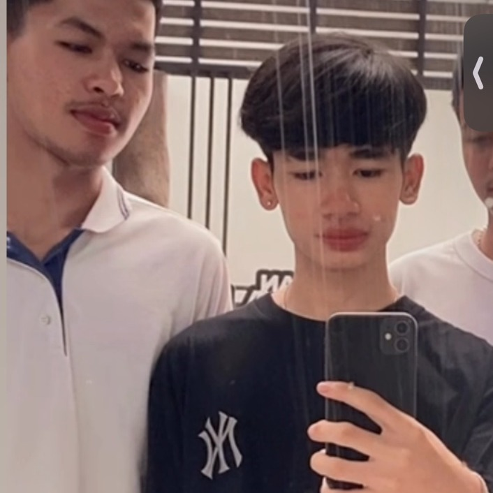
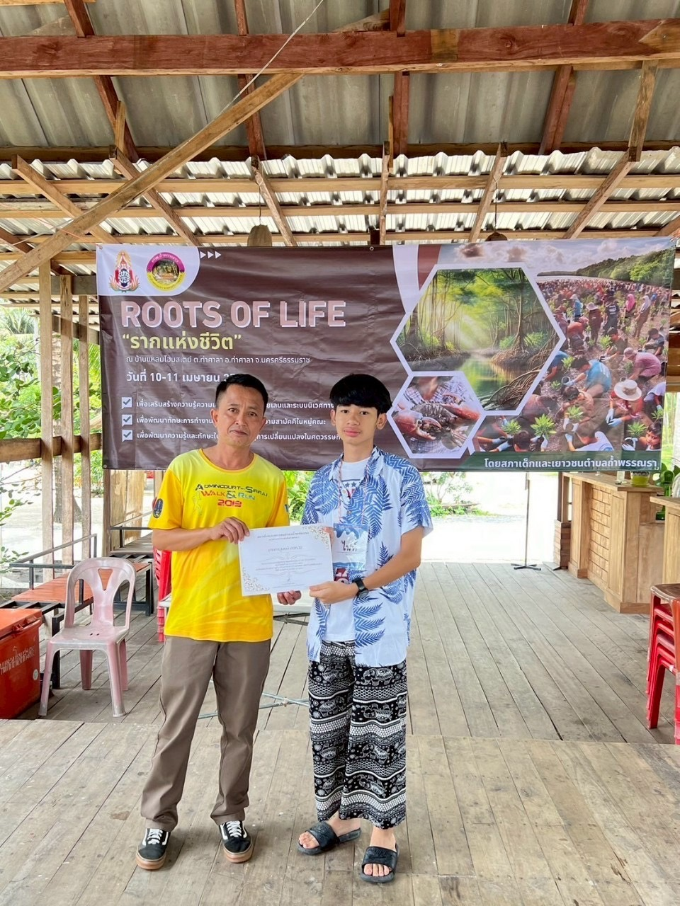
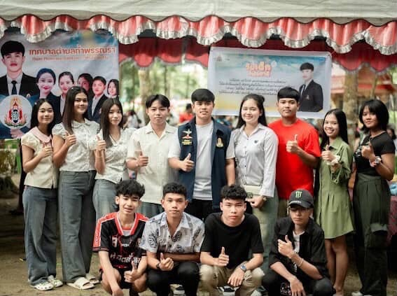
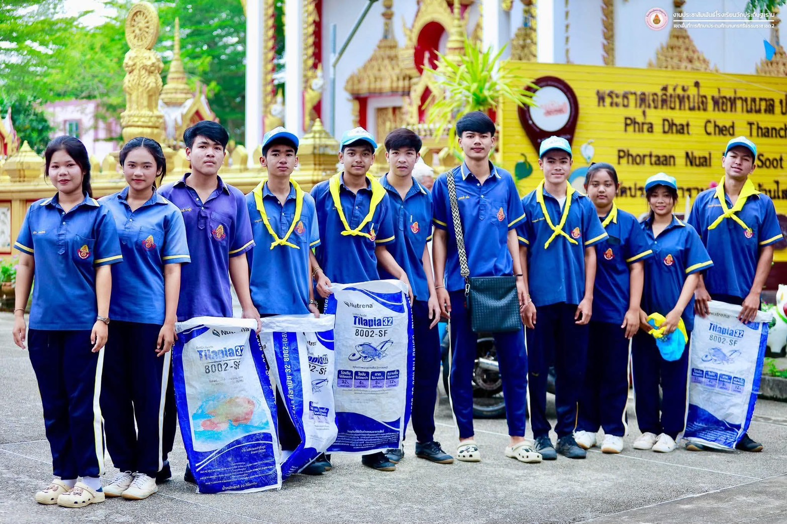

ประวัติส่วนตัว
ชื่อ: นายภาณุพงษ์ คงทอง
วันเกิด: 18 กันยายน 2551
อายุ: 18 ปี
ระดับชั้น: มัธยมศึกษาปีที่ 6
สถานศึกษา: โรงเรียนทุ่งใหญ่เฉลิมราชอนุสรณ์ รัชมังคลาภิเษก
นักเรียนชั้นมัธยมศึกษาปีที่ 6 โรงเรียนทุ่งใหญ่เฉลิมราชอนุสรณ์ รัชมังคลาภิเษก มีความสนใจด้านเทคโนโลยี ดนตรี และกีฬา พร้อมเรียนรู้และพัฒนาตนเองอยู่เสมอ
ชมผลงานของผม
ผมเป็นคนที่พร้อมเรียนรู้สิ่งใหม่ มีความรับผิดชอบ และให้ความสำคัญกับการทำงานเป็นทีม ผมสนใจการทำกิจกรรมเพื่อสังคมและการพัฒนาชุมชน เพราะเชื่อว่าประสบการณ์จากการลงมือทำช่วยให้เติบโตทั้งด้านความรู้ ทักษะ และความคิด
ชื่อ: นายภาณุพงษ์ คงทอง
วันเกิด: 18 กันยายน 2551
อายุ: 18 ปี
ระดับชั้น: มัธยมศึกษาปีที่ 6
สถานศึกษา: โรงเรียนทุ่งใหญ่เฉลิมราชอนุสรณ์ รัชมังคลาภิเษก
มีเป้าหมายที่จะประกอบอาชีพครูคอมพิวเตอร์ เพื่อถ่ายทอดความรู้ด้านเทคโนโลยี ส่งเสริมให้นักเรียนคิดวิเคราะห์และใช้เทคโนโลยีอย่างสร้างสรรค์
เข้าร่วมกิจกรรมจิตอาสา ณ วัดประดิษฐาราม ช่วยดูแลและพัฒนาสถานที่ ฝึกความเสียสละและการทำงานร่วมกับชุมชน
ร่วมปลูกป่าชายเลนและปล่อยปู เรียนรู้การอนุรักษ์ทรัพยากรธรรมชาติ พร้อมทำงานร่วมกับเพื่อนและชุมชน
ฝึกซ้อมและบรรเลงยูโฟเนียมร่วมกับวง พัฒนาทักษะทางดนตรี วินัย และความสามัคคี
ช่วยประสานงานและดูแลสมาชิกในทีมสี ฝึกภาวะผู้นำ ความรับผิดชอบ และการทำงานเป็นทีม
เข้าร่วมอบรมและเรียนรู้ความรู้ด้านการเกษตรจากกิจกรรมคลินิกเกษตรเคลื่อนที่
เข้าร่วมกิจกรรมเปิดบ้านมหาวิทยาลัย เรียนรู้ข้อมูลคณะและแนวทางการศึกษาต่อ

กิจกรรม ROOTS OF LIFE “รากแห่งชีวิต” และรับเกียรติบัตร

เข้าร่วมกิจกรรมและทำงานร่วมกับเพื่อน

ร่วมกิจกรรมกับเพื่อน ๆ
ไม่ยอมแพ้ต่ออุปสรรค พร้อมเรียนรู้และก้าวเดินต่อไป